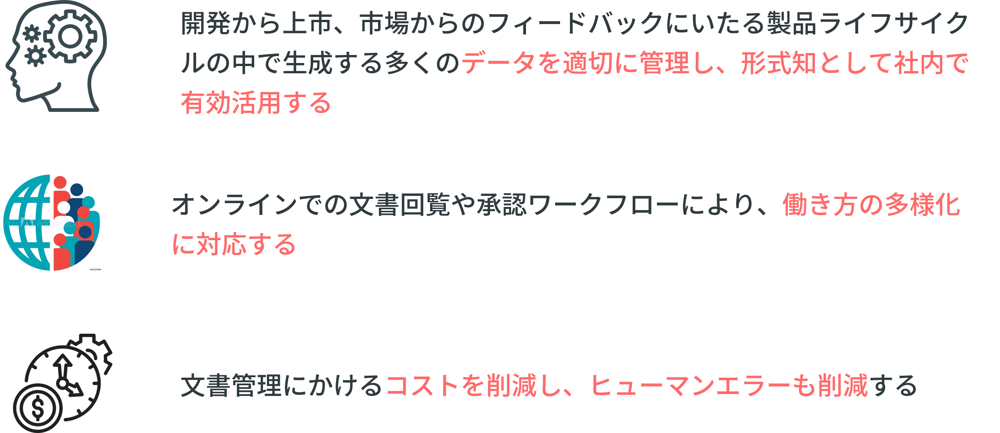
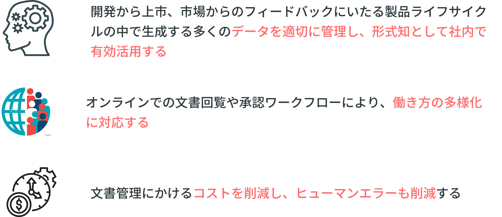
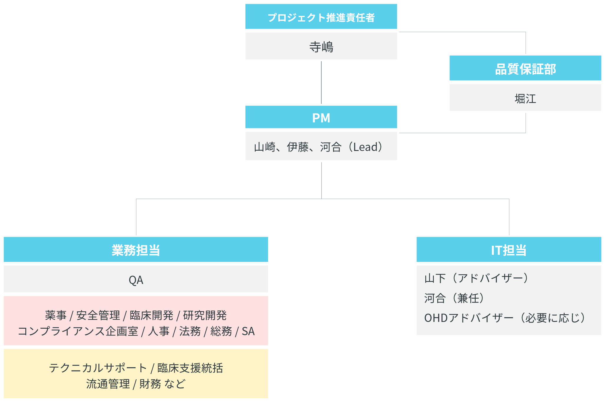

文書管理システム進捗共有
2021-09-16 | 文書システムPJ


現在利用している手順書/基準書/細則
Agenda
- 振り返り
- 選定したシステム
- 導入スケジュール
- 移管対象
- ユーザー権限
- トレーニング
振り返り
システム導入の目的

推進体制

導入システムについて
我々の重要な知的資産を管理し
リモート環境をより快適にする重要なシステムを
厳格かつ公正な視点で検証した結果・・・
Perma Document
に決定しました！
Perma Document 良い点
-
シンプルで直感的なユーザーインターフェース
-
データの再利用、再分析を実現しやすい
-
価格が安い
インターフェースはこんな感じです
導入スケジュール
本番稼働までのスケジュール
システムへの移管対象
移管対象と想定時期
※ Phase02以降は、状況を鑑み柔軟に対応していく予定です
Phase01 の移管に関して
現在利用している手順書/基準書/細則
⇒ 12月1日を目処に移管
12月1日以降に発生する記録
⇒ 文書システムで管理
過去利用していた手順書/基準書/細則 とその記録
⇒ 任意
ユーザー権限
- 文書作成権限
- 社長、副社長
- 正社員かつGxP業務に関連のある者
- 部門長
- 文書管理業務に特化した派遣社員
- 文書閲覧権限
- 上記文書作成権限に該当しない正社員
- 派遣社員、契約社員、エルダー社員
- 管理者権限
- 中西さん、山崎
- 権限無し
- 役員（社長副社長を除く）、監査役、顧問
トレーニング
システム導入時のトレーニング
- ベーシックトレーニング
全員対象です。
文書の閲覧やレビューについて学びます。
- アドバンスドトレーニング
文書作成権限の方が対象です。
文書の作成と承認回覧、記録の保管について学びます。
- カスタムテンプレートトレーニング
文書作成権限の方が対象です。
カスタムテンプレート機能を用いた記録の作成や承認回覧について学びます。
🤗 Thank you!
質問・意見・相談いつでもお待ちしてます！